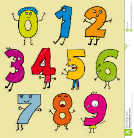

Our Services
 | Alphabet You can easily learn alphabet here. For each letter, there are given examples with images. Letter recognition is very important, so we"ll make it easy for little children. |
 | Animals Animals are an important part of our everyday life. We can help children recognize the animals they see everyday. Here they will se images an will get familiar with them. |
 | Fruit and Vegetables There are many varieties of fruit and vegetables, so we try to show some of them, the most important ones for our health. Every fruit/vegetable will be illustrated with a pic. |
 | Objects Learning objects never was this easy! This page will help children to be able to tell someone what object they see, beacuse everything we see is an object. |
|  | Numbers Just like the alphabet, numbers are very important! Number regocnition from children is the main purpose of this part. Children will see images of numbers and will learn them easily. |